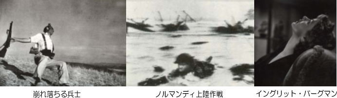

『戦場カメラマン』
2004年7月号
橋田信介という老カメラマンがイラクの戦場で命を落としました。ベトナム戦争、カンボジア内戦、アフガン戦争、
あまたの戦乱の現場から写真と記事を送り続けた歴戦の勇士です。ベトナム戦争では、ほとんどの西側陣営のカメラマンは
米軍の従軍記者として爆弾を落とす側から映像を送ったのに対して、橋田は爆弾を落とされる側のハノイから写真と記事を送った
稀有な日本人ジャーナリストでした。結果として遺作となってしまった＜イラクの中心でバカとさけぶ＞を読むと、
このイラク戦争の取材をもって最後の仕事にしたい、と語っていました。「人間の命、使うときに使わねば意味がない」。
飄々（ひょうひょう）と弾雨降る戦場を駆け巡り、戦争の真実を日本へ世界へ配信する。勇気があるというのか無鉄砲というのか、
何事にもとらわれずに無頼な生き方を通した老カメラマンの一生はそれはそれで味のある人生だったのかもしれません。
戦場カメラマンという職業のなかで有名なカメラマンのひとりにロバート・キャパがいます。今年は没５０年になるということで、
インドシナ戦争でキャパが地雷を踏んだハノイ近郊の場所を特定し慰霊を行ったという新聞記事が載っていました。
私も何年か前、東京駅の大丸百貨店の上にあるミュージアムで写真展を見たことがあります。戦場で生き抜こうとする兵士たちの息遣いが、
モノクロの写真の奥から伝わってくるようなそんな迫力に圧倒されたような記憶があります。
そのとき買ってきた葉書大の写真は平塚店のとあるところに飾ってあります。
ロバート・キャパ。本名アンドレ・フリードマン。１９１３年ハンガリーブタペスト生まれ。
ソ連共産党でスターリンの政敵であったレオン・トロツキーの演説写真でカメラマンとしてデビュー。
その後、スペイン内戦。日華事変・第二次世界大戦・イスラエル独立戦争そして最後の戦場となる仏領インドシナ戦争。
４０才で生涯を閉じるまで２０年近くにわたり五つの戦場を棲家(すみか)とした伝説の戦場カメラマン。
代表的によく知られている写真は二枚。ひとつはスペイン内戦のときに撮られた「崩れ落ちる兵士」。
もうひとつは第二次世界大戦の「ノルマンディー上陸作戦」。
「崩れ落ちる兵士」（１９３６年）は、キャパの代表作というばかりではなく、戦争写真の代表的な作品であり、
草創期にあったフォト・ジャーナリズムのひとつの方向を決定した傑作とされています。
ファシスト陣営フランコ将軍に対抗して立ち上がった共和国軍。決戦の舞台となったスペイン南部の町ゴルドバ。
そこから数マイル北へ離れた村の戦闘でフェデリコ・ガルシアという兵士が銃弾にあたり倒れた瞬間を捉えた一枚です。
この写真はやがて崩壊するスペイン共和国の運命を予告するものとなり、崩壊してからはそのために戦った共和国軍兵士や
国際義勇軍の兵士たちの栄光と悲惨を象徴する写真となりました。
「ノルマンディー上陸作戦」（１９４４年）の写真のなかでも、とりわけ有名なのは胸まで水に浸かり陸に向かって前進する
兵士の姿を撮ったものです。兵士の名はエドワード・リーガン二等兵。彼はこの写真で連合軍で最も有名なプライベート（二等兵）
に昇進します。作戦決行日はDデーと暗号され６月６日未明北フランスのノルマンディーの海岸にアイゼンハワー将軍指揮下の連合軍
１６万５千の大部隊が上陸作戦を敢行します。キャパは第一歩兵師団第１６連隊に所属し、オマハという作戦名のつけられた海岸に上陸。
オマハビーチは最もドイツ軍の抵抗の激しいところであり、リーガンの所属していた連隊のなかでも、故郷が同じヴァージニア州の
小さな町ベッドフォード出身の４６人の兵士のうち帰還できたのは半数の２３人にすぎなかったという凄まじい戦闘のなかでの撮影でした。
ちょっとピンぼけ
１９４７年の春。キャパの第二次大戦の従軍回顧録が出版されます。「ちょっとピンぼけ」という題名で洒落た文体と迫力ある写真で
評判は上々でした。ノルマンディー上陸の場面をこう書いています。＜海水は冷たく、海岸まではまだ１００ヤード以上もあった。
私の周囲の海面に銃弾はしぶきを上げて飛びちった。私が急いで一番近い傷害物の蔭に飛び込んだら、
そこにもう一人の兵隊もいっしょに飛び込んできた。彼は銃の防水布を取り除くとあまりねらいも定めず、
煙に包まれた海岸めがけて撃ち始めた。自分の撃ち出す銃声に勇気づけられてか、彼は私を後に突進していった。
・・・・・一週間後、私はオマハの海岸で私が撮った写真が上陸作戦についての最もすぐれたものだったということを知った。
しかし、残念ながら暗室の助手は興奮のあまり、ネガを乾かす際、過熱のためにフィルムの乳剤を溶かして、
ロンドン事務所の連中の眼の前ですべてを台無しにしてしまった。１０６枚写した私の写真の中で救われたのはたった８枚きりだった。
新聞に載った熱気でぼけた写真には”キャパの手はふるえていた”と説明してあった＞。
世界中に配信された有名なDデーオマハ海岸の連合軍上陸の写真は、写真の出来では完全な失敗ですが、
逆にボケていることでそこから緊張感が伝わり、銃弾の着弾音や爆発音が響いてくるかのように感じられ、
実際にはその写真の持つ劇的な衝撃力を高めたといえるかもしれません。
大戦後、アメリカへ戻り、もう戦場写真は撮らないでスタジオカメラマンになってほしいと美女に懇願されます。
このひたむきな女は恋人のイングリット・バーグマン。「そんなこと言うなら、ほかを当たったほうがいい」。
すげない返事のキャパ。ハリウッドナンバーワン女優に結婚を迫られてもボヘミアンとしての自由放縦な生き方を変えなかったキャパ。
大酒飲みで博打打。法螺ばかり吹いている風来坊。持ってる財産はドイツ・ライカ社のカメラ一台。
なんでこんな無頼派が女にはもてまくるのでしょう。私もさっそくライカが欲しくなりました。

株式会社 新清
代表取締役 刈屋 隆